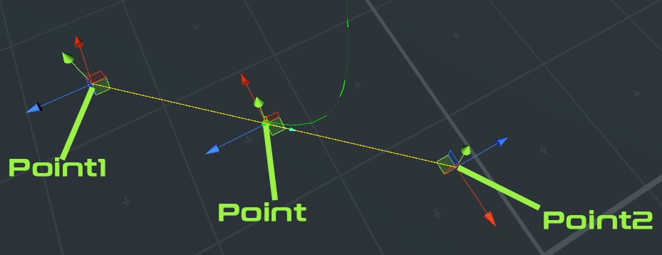

A branch is a group of nodes, so each branch object has a list of nodes
To acces the nodes list of a branch
SPData sPData; public void Start() { sPData =GetComponent<SplinePlus>().SPData; //Access branch with key 3 List<Node> nodes = sPData.DictBranches[3].Nodes; }
Node Points
 Transfoms that control the node position(Point) and node handles (Point1 and point2) "Point1" and "Point2" are transforms children of the main transform "Point"
See example bellow
SPData sPData; GameObject MyFollower; public void Start() { sPData =GetComponent<SplinePlus>().SPData; //Access branch with key 3 List<Node> nodes = sPData.DictBranches[3].Nodes; Node node = nodes[0]; // change node position node.Point.Position= new Vector3(10,2,8); // change node handles position node.Point1.localPosition = new Vector3(3,0,2); node.Point2.localPosition = -node.Point1.localPosition; }
Node Is Shared
You can check this node is shared or not by simply checking the value of IsShared
See example bellow
SPData sPData; GameObject MyFollower; public void Start() { sPData =GetComponent<SplinePlus>().SPData; //Access branch with key 3 List<Node> nodes = sPData.DictBranches[3].Nodes; Node node = nodes[0]; if(node.IsShared)Debug.Log("Node is shared"); else Debug.Log("Node not shared"); }
Node Connected Branches
get the list of branch key connected to the node, if node is not shared you will get just one branch key.
See example bellow
SPData sPData; GameObject MyFollower; public void Start() { sPData =GetComponent<SplinePlus>().SPData; //Access branch with key 3 List<Node> nodes = sPData.DictBranches[3].Nodes; Node node = nodes[0]; var nodeBranchKey = node.SharedNodeData.ConnectedBranches; for (int i = 0; i < nodeBranchKey.Count; i++) { Debug.Log("node is on branch with key" + nodeBranchKey[i]); } }
Node Speed
The node speed value
See example bellow
SPData sPData; GameObject MyFollower; public void Start() { sPData =GetComponent<SplinePlus>().SPData; //Access branch with key 3 List<Node> nodes = sPData.DictBranches[3].Nodes; Node node = nodes[0]; int nodeSpeed = node.SharedNodeData.Speed; // node normals factor varies form -180 to 180 int nodeNormal = node.SharedNodeData.NormalFactor; //you need to call the function bellow to force the spline recalculation sPData.SplinePlus.SplineCreationClass.UpdateAllBranches(sPData); }
Node Normal
The node normal value
See example bellow
SPData sPData; GameObject MyFollower; public void Start() { sPData =GetComponent<SplinePlus>().SPData; //Access branch with key 3 List<Node> nodes = sPData.DictBranches[3].Nodes; Node node = nodes[0]; // node normals factor varies form -180 to 180 node.SharedNodeData.NormalFactor = 90.0f; //you need to call the function bellow to force the spline recalculation sPData.SplinePlus.SplineCreationClass.UpdateAllBranches(sPData); }
First/Last Node
You can get the first or last node of your branch without having to access the nodes list.
see example bellow
SPData sPData; public void Start() { sPData =GetComponent<SplinePlus>().SPData; //Get first and last node of a branch Node firstNode = sPData.DictBranches[3].FirstNode; Node lastNode = sPData.DictBranches[3].LastNode; }
Vertices, Normals, Tangents
To access the branch Vertices, Normals, Tangents that defines the branch bezier, see example bellow
SPData sPData; public void Start() { sPData =GetComponent<SplinePlus>().SPData; //Vertices, Normals, Tangents of branch with key 3 List<Vector3> vertices = sPData.DictBranches[3].Vertices; List<Vector3> normals = sPData.DictBranches[3].Normals; List<Vector3> tangents = sPData.DictBranches[3].Tangents; }
Branch Length
Get the branch length (Distance).
See example bellow
SPData sPData; public void Start() { sPData =GetComponent<SplinePlus>().SPData; //Get branch length float branchLength = sPData.DictBranches[3].Length; }